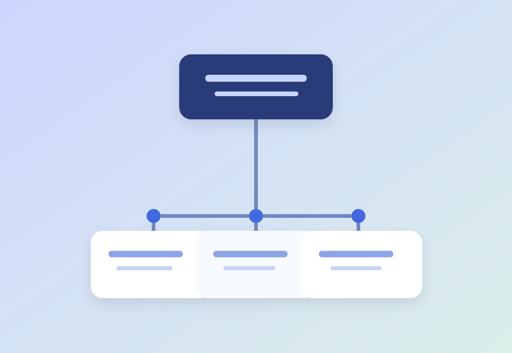

01 / SOCIAL RECRUITINGERFAHRUNGSFELD
Die richtigen Menschen erreichen.
Zielgruppen verstehen, Social Ads und Recruiting-Funnels konzipieren, Kampagnen steuern und Ergebnisse optimieren.
Strategisch im Kopf. Kreativ in der Umsetzung. Ich verbinde Marketing, digitale Ideen und Projektarbeit – mit dem Anspruch, Dinge wirklich voranzubringen.
 BEWEG DEINE MAUS ↗
BEWEG DEINE MAUS ↗Ich mag Menschen, die ihren Horizont erweitern und Dinge aus einem neuen Blickwinkel betrachten. Genau das treibt mich auch beruflich an.
Mit Erfahrung in Performance Marketing, Social Recruiting, Employer Branding und Projektsteuerung bringe ich Ideen nicht nur aufs Papier – sondern in die Praxis.
 BEWEG DEINE MAUS ↗
BEWEG DEINE MAUS ↗Drei Bereiche, in denen ich wirklich etwas beitragen kann.
Ich übersetze Ziele und Ideen in nachvollziehbare Konzepte und konkrete Maßnahmen.
Meta Ads, Recruiting-Funnels und datenbasierte Optimierung – kreativ und analytisch.
Ich koordiniere Aufgaben und schaffe klare, praktikable digitale Abläufe.
Was ich in der Praxis gemacht habe – ohne geschönte Referenzen oder fiktive Projekte.
Zielgruppen verstehen, Social Ads und Recruiting-Funnels konzipieren, Kampagnen steuern und Ergebnisse optimieren.
Inhalte und Arbeitgeberkommunikation entwickeln, die authentisch informieren und in Erinnerung bleiben.
Projekte abstimmen, Prioritäten setzen, Prozesse verbessern und Maßnahmen eigenverantwortlich ins Ziel bringen.

Vier Schritte, ein Anspruch: verstehen, was zählt – und daraus etwas entwickeln, das funktioniert.
Ziele, Bedürfnisse und Zusammenhänge erkennen, bevor ich ins Machen komme.
Studium und praktische Grundlagen in Marketing und Kommunikation.
Performance-Kampagnen, Kundenprojekte und Projektsteuerung.
Employer Branding, Social Recruiting und digitale Kommunikation.
Ich suche ein Umfeld, in dem ich mitdenken, Verantwortung übernehmen und gemeinsam mit anderen etwas bewegen kann. Lass uns sprechen.